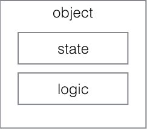
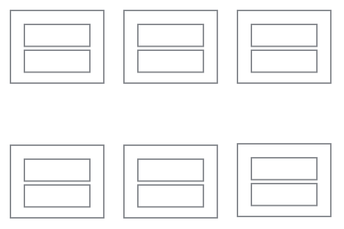
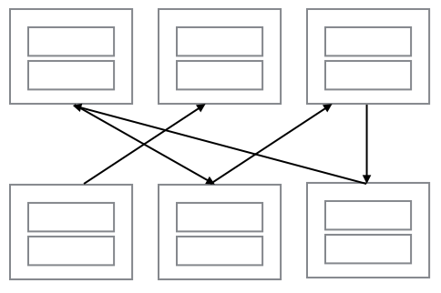
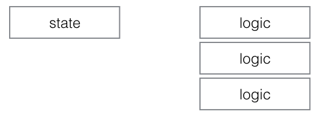

“I think the lack of reusability comes in object-oriented languages, not functional languages. Because the problem with object-oriented languages is they’ve got all this implicit environment that they carry around with them... You wanted a banana but what you got was a gorilla holding the banana and the entire jungle.”
- Joel Armstrong
“If you're creating constructor functions and calling new on them, you don't know javascript.” - Eric Elliot
“I now see my early attempts to support the classical model in JavaScript as a mistake.” - Douglas Crockford
“OO is the roman numerals of computing” - Rob Pike
bundles state and logic together
state in lots of places
dependencies
separates state and logic
